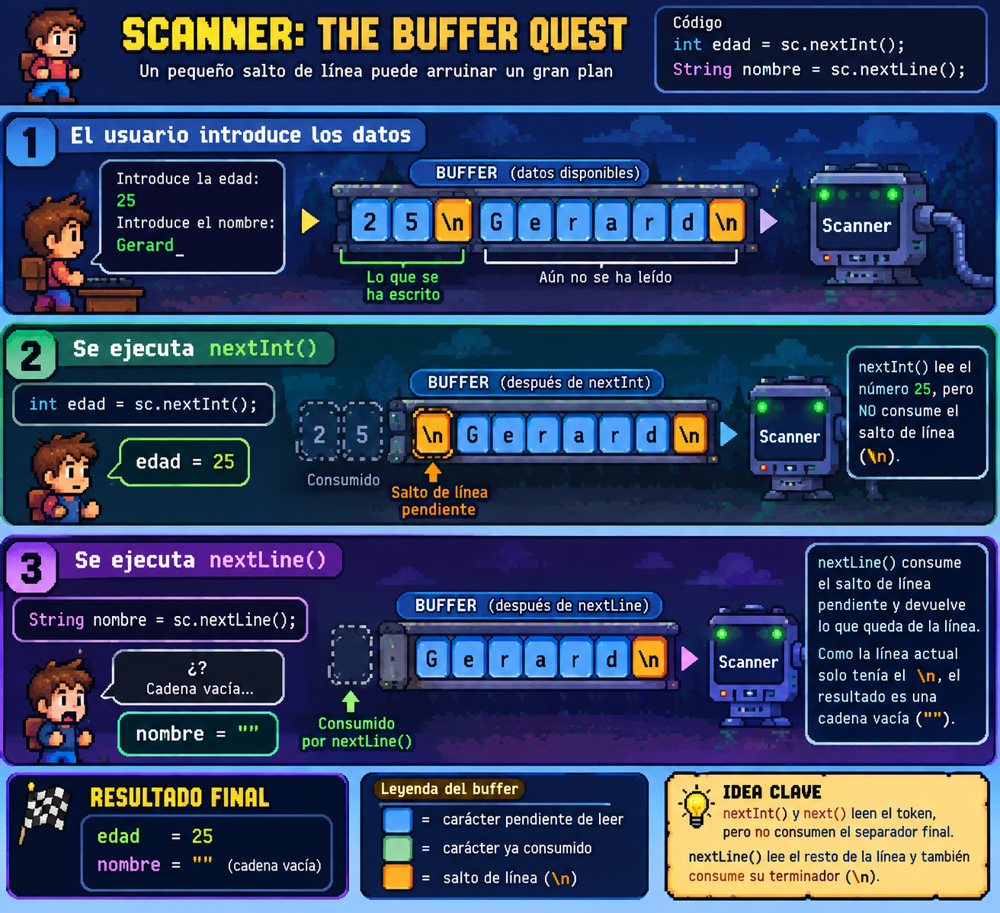

Unitat Didàctica 4:
En aquesta unitat aprendràs:
ScannerStringMathRandomScannerLa utilitat Scanner ens permet llegir les dades introduïdes per teclat a la consola.
A diferència de IO.readln(), l'Scanner permet llegir diverses dades en una mateixa línia.
Per començar a llegir, preparem un lector (scanner) vinculat a l'entrada estàndard del sistema (System.in):
Scanner scanner = new Scanner(System.in);
Segons el tipus de dada que esperem rebre, farem servir el mètode adequat:
scanner.nextLine(): llegeix el text fins a trobar un salt de línia \n.scanner.next(): llegeix només la següent paraula (fins a trobar un espai en blanc o salt de línia).scanner.nextInt(): llegeix un nombre enter (int).scanner.nextDouble(): llegeix un nombre decimal (double).scanner.nextBoolean(): llegeix un valor booleà (true o false).
void main() {
Scanner scanner = new Scanner(System.in);
print("Com et dius? ");
String nom = scanner.nextLine();
print("Quants anys tens? ");
int edat = scanner.nextInt();
print("Quina alçada tens en metres (ex: 1,75)? ");
double alcada = scanner.nextDouble();
println("Hola " + nom + ", tens " + edat + " anys i fas " + alcada + "m!");
}
Només nextLine() consumeix els salts de línea \n (INTROs).
Els altres métodes deixen el salt de línea al buffer, pendent de consumir.

InputMismatchException
Si l'scanner es troba amb un valor que no coincideix amb el tipus de dada esperat, es produirà una excepció i el programa s'aturarà.
StringStringAquestes són les operacions més habituals que utilitzaràs per treballar amb text:
text.length(): retorna el nombre total de caràcters de la cadena.text.charAt(index): retorna el caràcter a la posició indicada (el primer caràcter sempre és a la posició 0).text.toUpperCase() / text.toLowerCase(): retorna el text convertit a majúscules o a minúscules.text.trim() / text.strip(): elimina els espais en blanc sobrants dels extrems.text.substring(inici, fi): extreu un fragment de text des de la posició inici fins a fi - 1.text.contains("paraula"): retorna true si el text conté la paraula indicada.text.startsWith("prefix") / text.endsWith("sufix"): comprova com comença o acaba un text.text.replace("vell", "nou"): canvia totes les aparicions d'un text per un altre.text.equals(altre): compara si dos textos tenen exactament el mateix contingut (true o false).text.equalsIgnoreCase(altre): compara dos textos ignorant majúscules i minúscules.text.split("delimitador"): divideix el text en un array de cadenes utilitzant el delimitador indicat.
void main() {
String nom = " Maria Garcia ";
println("Original: '" + nom + "'");
println("Longitud: " + nom.length());
println("Sense espais: '" + nom.trim() + "'");
println("En majúscules: " + nom.toUpperCase());
println("Primer caràcter: " + nom.trim().charAt(0));
println("Conté 'Garcia'? " + nom.contains("Garcia"));
println("Subcadena (0..5): " + nom.trim().substring(0, 5)); // Maria
println("Substitució: " + nom.replace("Garcia", "Pérez"));
println("És igual a 'Maria Garcia'? " + nom.trim().equals("Maria Garcia"));
// SPLIT
String frase = "Hola, com estàs?";
String[] paraules = frase.split(" "); // paraules = { "Hola,", "com", "estàs?" }
println("Paraules de la frase:");
println(paraules[0]); // Hola,
println(paraules[1]); // com
println(paraules[2]); // estàs?
// SPLIT
String[] noms = "Anna;Joan;Pere;Laura".split(";");
// noms = { "Anna", "Joan", "Pere", "Laura" }
// SPLIT
String[] parts = "27/10/1981".split("/");
// parts = { "27", "10", "1981"
}
.formatted()Quan hem de mostrar xifres amb un nombre concret de decimals, alinear columnes o construir missatges amb variables, podem aplicar el mètode .formatted(...) directament sobre qualsevol cadena de text o Text Block:
Els especificadors de format més comuns són:
%s: per incrustar cadenes de text.%d: per a nombres enters (int, long).%.2f: per a nombres decimals (double) amb exactament 2 xifres decimals.%n: per afegir un salt de línia independent del sistema operatiu.
void main() {
String producte = "Portàtil";
double preu = 899.95;
int quantitat = 2;
// .formatted() substitueix els especificadors pels valors indicats:
String linia = "Producte: %-12s | Unitats: %2d | Preu: %8.2f €".formatted(producte, quantitat, preu);
println(linia);
String total = "Total a pagar: %.2f €".formatted(preu * quantitat);
println(total);
// Funciona de manera idèntica amb Text Blocks per a plantilles multilínia:
String factura = """
=========== FACTURA SIMPLIFICADA ===========
Article: %s
Total: %.2f €
============================================
""".formatted(producte, preu * quantitat);
println(factura);
}
Observa l'ús de les cometes triples """...""" per a definir cadenes de text multilínia.
MathMath proporciona un conjunt complet de funcions i constants matemàtiques.
S'utilitza escrivint directament Math. seguit del nom de l'operació o constant que necessitem:
Math.PI: nombre pi (approx).Math.sqrt(x): calcula l'arrel quadrada ($\sqrt{x}$).Math.pow(base, exponent): calcula la potència $\text{base}^{\text{exponent}}$ (retorna sempre un double).Math.abs(x): calcula el valor absolut (elimina el signe negatiu d'un número).Math.max(a, b) / Math.min(a, b): retorna el valor més gran o el més petit entre dos números.Math.round(x): arrodoneix un nombre decimal a l'enter més proper.Math.floor(x): arrodoneix cap avall a l'enter inferior més proper.Math.ceil(x): arrodoneix cap amunt a l'enter superior més proper.Math.random(): genera un nombre decimal aleatori entre 0.0 (inclòs) i 1.0 (exclòs).
void main() {
double radi = 5.0;
double area = Math.PI * Math.pow(radi, 2);
println("Àrea del cercle: " + area);
double arrel = Math.sqrt(144);
println("Arrel de 144: " + arrel); // 12.0
println("Màxim entre 45 i 80: " + Math.max(45, 80)); // 80
println("Mínim entre 45 i 80: " + Math.min(45, 80)); // 45
println("Valor absolut de -15: " + Math.abs(-15)); // 15
println("Arrodonir 4.7: " + Math.round(4.7)); // 5
println("Sòl (floor) de 4.7: " + Math.floor(4.7)); // 4.0
println("Sostre (ceil) de 4.2: " + Math.ceil(4.2)); // 5.0
}
RandomPodem utilitzar la utilitat Random quan volem generar valors a l'atzar amb més flexibilitat
(nombres enters en intervals concrets, daus, cartes, simulacions,...)
Primer preparem el generador:
Random random = new Random();
I després podem utilitzar les seves operacions:
random.nextInt(limit): genera un enter a l'atzar entre 0 i límit - 1.random.nextInt(start, end): genera un enter entre start i end - 1.random.nextDouble(): genera un decimal aleatori entre 0.0 i 1.0.random.nextBoolean(): genera un valor booleà (true o false) amb un 50% de probabilitat.
void main() {
Random random = new Random();
// Simulació d'un dau de 6 cares:
int dau = random.nextInt(1, 7);
println("Ha sortit el dau: " + dau);
// Llançament d'una moneda:
boolean esCara = random.nextBoolean();
println("Ha sortit cara? " + esCara);
// Probabilitat decimal:
double percentatge = random.nextDouble() * 100;
println("Percentatge d'èxit: %.1f%%".formatted(percentatge));
}
Posa a prova el que has après completant els qüestionaris interactius auto-avaluables i els reptes de programació.